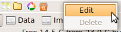
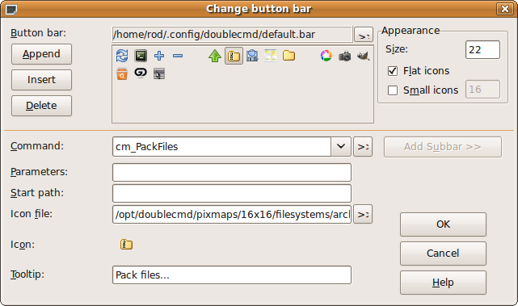
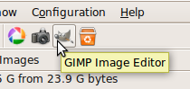
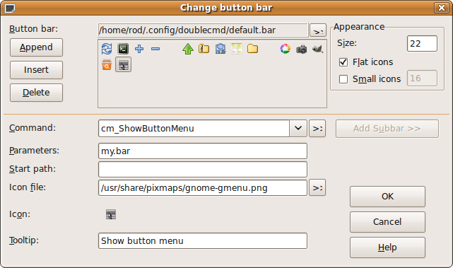

3.2 Button toolbar

This provides an alternative way to call internal commands and external programs by using buttons (with popup hints).
To edit the Button Toolbar panel just click right mouse button on it and choose item Edit.

"Change button bar" window

The first line shows where Double Commander keeps its settings for the button bar (as in TC). Below this you can see the added buttons.
Append — adds a new empty button to the bar.
Delete — deletes the button.
Size — sets the size of the buttons. Better sizes are 16, 22 or 32, but you can set any size (in pixels).
Flat icons — makes the buttons look like icons.
Command — here you can set any internal command or specify any other command.
Parameters — sets parameter(s) for the command:
Functions (without parameters they give output for all selected files):
%f - only filename
%d - only path, without trailing delimiter
%p - path+filename
%D - current path in active or chosen panel
Choosing panel (if not given, active panel is used):
%X[l|r|s|t] - where X is function (l - left, r - right, s - source, t - target)
Choosing selected files (only for %f, %d, %p):
%X[
] - where X is function
is 1..n, where n is number of selected files. If there are no selected files, currently active file is nr 1.
If
is invalid or there is no selected file by that number the result for the whole function will be empty string.
Adding prefix, postfix before or after the result string:
%X[{
}][{ }] If applied to multiple files, each name is prefixed/postfixed.
Above parameters can be combined together.
Order of params:
- %function
- left or right or source or target panel (optional)
- nr of file (optional)
- prefix, postfix (optional)
Examples:
- %f1 - first selected file in active panel
- %pr2 - full path of second selected file in right panel
- %fl - only filenames from left panel
- %pr - full filenames from right panel
- %Dl - current path in left panel
- %f{-f } - prepend each name with "-f "
- (ex.: -f
-f ) - %f{"}{"} - enclose each name in quotes
- (ex.: "
" " ") - %f1{-first }%f2{ -second }
- if only 1 file selected : -first
- if 2 (or more) files selected: -first
-second
Start path — the full path to the command (if necessary).
Icon file — sets the path to the button icon.
Icon — previews the button icon.
Tooltip — hint description (tooltip) for the button on the bar.

To create a splitter between the buttons, set a new button with Tooltip = "-" (minus). Just leave the other options blank.
Also there is an ability to create a drop-down menu:

Set Command to cm_ShowButtonMenu, and specify another .bar file with a suitable menu as Parameters. See the 'default.bar' file located in: ~/.config/doublecmd/ (Linux) C:\Documents and Settings\[user name]\Application Data\doublecmd\ (Windows) for details of the menu structure. Here you can see the 'my.bar' file specified as the drop-down menu file:
